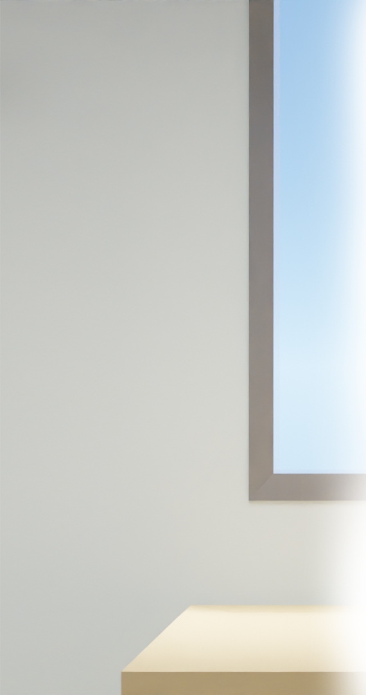
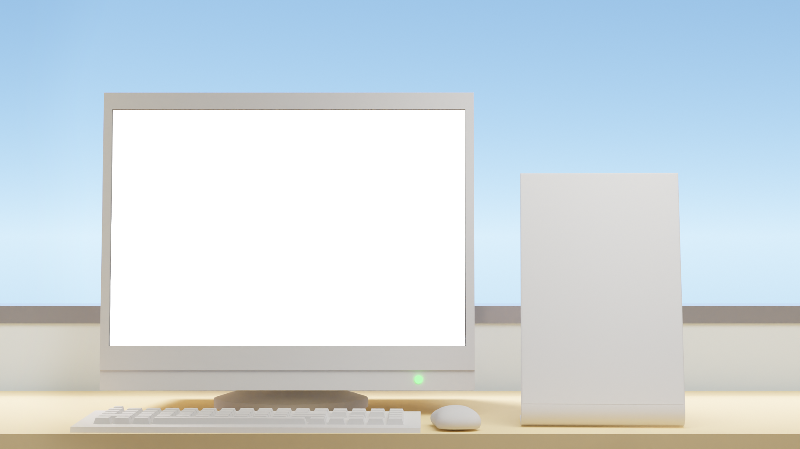
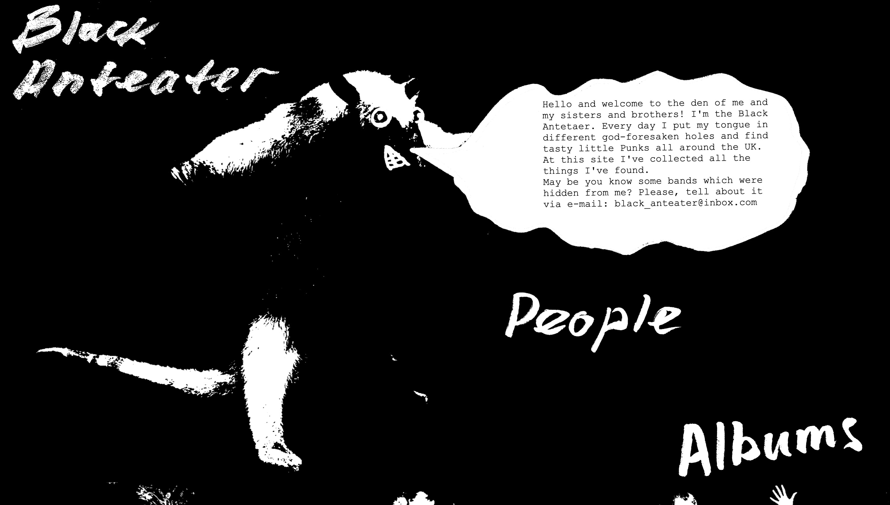
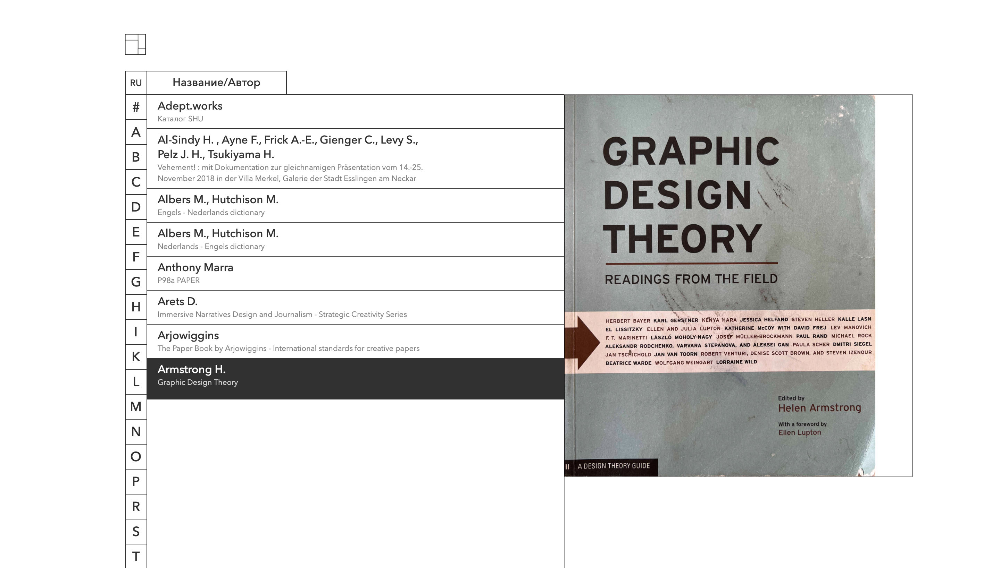
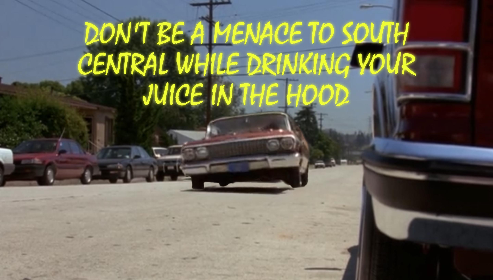
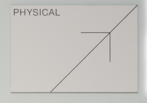
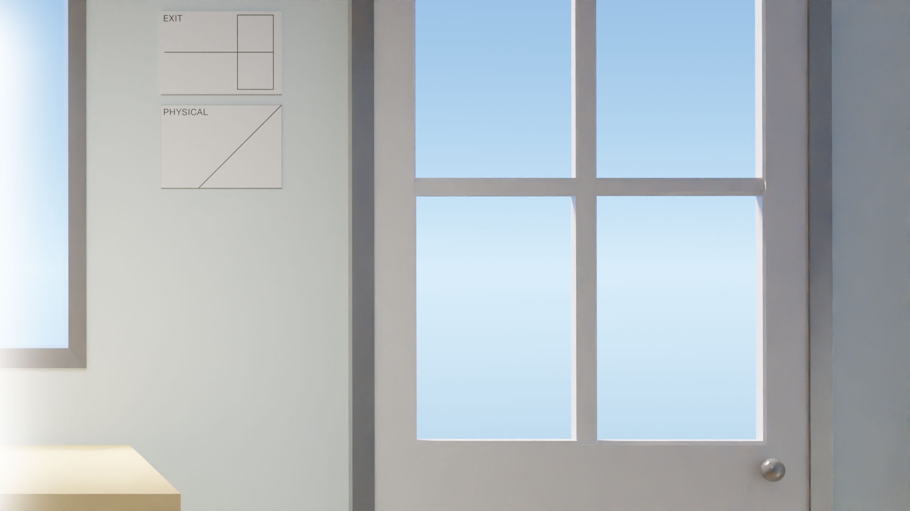

This is the project commited to punks. Through digital and physical media I explored visual representations of punk subculture.
Black Anteater
This is the project commited to punks. Through digital and physical media I explored visual representations of punk subculture.
Этот проект посвящен панкам. Через цифровые и физические средства я исследовал визуальные репрезентации субкультуры панков.

This is the site-catalogue for a small library Placeholder in Moscow. There I systemized about 400 books and put into a clear design that helps to find the book you need.
Placeholder
This is the site-catalogue for a small library Placeholder in Moscow. There I systemized about 400 books and put into a clear design that helps to find the book you need.
Это сайт–каталог для небольшой библиотеки Placeholder в Москве. На этом сайте я создал систему из 400 книг и обернул в читсый дизайн, помогающий найти нужную вам книгу.

Dear evolution
Animation video about fictional evolution from a deer's perspective. Assembled in Adobe After Effects
Анимационное видео о фиктивном ходе эволюции с точки зрения оленя. Проект собран в программе Adobe After Effects
province
Project-exploration performed on Figma. As the object of exploration was taken central market in a small provincial town in Russia, saturated with examples of “domestic” design.
Проект-исследование, выполненный на web-платформе Figma. В качестве объекта исследования был взят центральный рынок маленького провинциального города, который был насыщен примерами "бытового" коммуникативного дизайна.

The project is performed in the format of a website, dedicated to the film "Do not threaten South Central while drinking juice in your neighborhood." Through the footage of the film, I showed some funny moments, and one of them embodied in the form of an interactive poster.
DBMTSC
The project is performed in the format of a website, dedicated to the film "Do not threaten South Central while drinking juice in your neighborhood." Through the footage of the film, I showed some funny moments, and one of them embodied in the form of an interactive poster.
Проект в формате сайта, посвящен фильму "Не грози южному централу, попивая сок у себя в квартале". Через кадры из фильма я показал несколько забавных моментов, а один из них воплотил в виде интерактивного постера.

